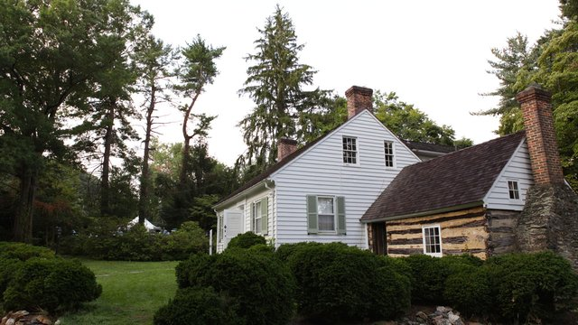

Henson originally rose to fame as the inspiration for Stowe's title character in Uncle Tom's Cabin, a legacy has endured for better or worse.
Uncovering Josiah Henson
Spreading Awareness
Sea an reque similique gloriatur. Cum ex tollit nullam philosophia, ex timeam deseruisse scriptorem mel. His commune scribentur at, at eum error impedit. Id eum lorem veniam molestie, facete disputando an cum. An alia utamur constituto sed, animal euripidis ne vel.
Sea an reque similique gloriatur. Cum ex tollit nullam philosophia, ex timeam deseruisse scriptorem mel. His commune scribentur at, at eum error impedit. Id eum lorem veniam molestie, facete disputando an cum. An alia utamur constituto sed, animal euripidis ne vel.
Sea an reque similique gloriatur. Cum ex tollit nullam philosophia, ex timeam deseruisse scriptorem mel. His commune scribentur at, at eum error impedit. Id eum lorem veniam molestie, facete disputando an cum. An alia utamur constituto sed, animal euripidis ne vel.
Sea an reque similique gloriatur. Cum ex tollit nullam philosophia, ex timeam deseruisse scriptorem mel. His commune scribentur at, at eum error impedit. Id eum lorem veniam molestie, facete disputando an cum. An alia utamur constituto sed, animal euripidis ne vel.
An Extraordinary Life
Josiah Henson was born on a farm in Charles County, a mile away from the town of Port Tobacco on June 15, 1979. As a young child, he was sold to the Riley plantation with his mother, though his brothers and sisters were auctioned to another owner. His only memory of his father is of seeing him horribly beaten and maimed by a slave master.
Though Henson described Riley as “unprincipled and cruel” he was a loyal servant for the better part of 35 years, becoming the plantation overseer as a young man. He sought to impress his master, compelling the plantation’s other slaves to work “many an extra hour, in order to show my master what an excellent day’s work had been accomplished, and to win a kind word or a benevolent deed from his callous heart,” Henson said in his autobiography.
Riley trusted Henson to such a degree that Henson accompanied 18 of his fellow slaves to Kentucky, during which Henson convinced the slaves not to escape bondage on the journey, a fact that Henson would regret decades later. He remained in Kentucky for three years on Riley’s brother’s plantation, also working as a preacher at the Methodist Episcopal Church.
Upon his return to Maryland, Henson arranged to buy his freedom, but was betrayed out of his money and sent to New Orleans to be sold. Henson was spared from being sold only when the nephew of his master that escorted Henson down south grew sick and requested that he transport him back home to Kentucky.
Henson lived at the Riley Plantation House for 35 years. The musuem will be built on the property, which is on Old Georgetown Rd. in Rockville.
From there, Henson, his wife, and four children managed a harrowing escape across the Ohio River, eventually reaching Ontario six weeks later on October 28, 1830.
As a free man in Canada, Henson worked as a farmhand for a few years before joining with other free blacks to buy a collective 200-acre plot of land near Colchester, Ontario in 1834. The Dawn Settlement for fugitive slaves was born.
Josiah Henson's Travels
Education was a staple in the settlement, which was established with the primary goals of teaching the free black refugees to become self-sufficient and better assimilated to white society, according to now-deceased historian Robin Winks. With the financial backing of abolitionist groups in the U.S. and Canada, Dawn had a school for children, which Henson would become the manager in 1943. At its peak, Dawn had around 500 inhabitants, together owning some 1500 acres of land, where they grew oats, wheat, tobacco and corn.
Henson was instrumental to the early success of the Dawn Settlement, as he was the most famous and influential fugitive slave in Canada at the time, according to Winks. He visited England three times to raise money for the Settlement, even meeting Queen Victoria in 1877.
The settlement would eventually start to struggle by the 1860s when mismanagement led to the shuttering of the school. Henson would live at Dawn with his wife Nancy till his death in 1883.
Maryland Population 1790-1860
Slave Population vs. Free Population
Source: US Census DataMaking an Impact
Sea an reque similique gloriatur. Cum ex tollit nullam philosophia, ex timeam deseruisse scriptorem mel. His commune scribentur at, at eum error impedit. Id eum lorem veniam molestie, facete disputando an cum. An alia utamur constituto sed, animal euripidis ne vel.

While mostly unknown in the U.S., Henson gained wide fame in Canada for his work with the Dawn Settlement. On the 100th anniversary of his death, Canada issued stamps bearing his image.
His commune scribentur at, at eum error impedit. Id eum lorem veniam molestie, facete disputando an cum. An alia utamur constituto sed, animal euripidis ne vel.
His commune scribentur at, at eum error impedit. Id eum lorem veniam molestie, facete disputando an cum. An alia utamur constituto sed, animal euripidis ne vel.
Sea an reque similique gloriatur. Cum ex tollit nullam philosophia, ex timeam deseruisse scriptorem mel. His commune scribentur at, at eum error impedit. Id eum lorem veniam molestie, facete disputando an cum. An alia utamur constituto sed, animal euripidis ne vel.
Southern Population at Time of Josiah Henson's Birth
Includes 1790 census totals from DE, MD, VA, KY, NC, SC, and GA
Source: US Census dataSea an reque similique gloriatur. Cum ex tollit nullam philosophia, ex timeam deseruisse scriptorem mel. His commune scribentur at, at eum error impedit. Id eum lorem veniam molestie, facete disputando an cum. An alia utamur constituto sed, animal euripidis ne vel.